SmartWP Theme
This is the theme help documentation file. Please search this before contacting for support. Note: We do not support theme customizations beyond it's original functionality & appearance.
Live Theme Demo1. Getting Started
A few words on getting started with your newest Bootstrap project, package files & theme support.
1.1 Included Files
After downloading the theme package open the folder named “SmartWP-Package” and un-zip the folder. Inside the package you will find the following files:
- SmartWP
- Bootstrap-WP-Plugin-3
- Documentation
1.2 Installation Options
To install your brand new Bootstrap theme (that you’ve already downloaded and un-packed) you have two primary options: FTP or WordPress theme upload from the Dashboard.
1.3 FTP Upload
To manually upload your new Bootstrap theme, login with your credentials to your website and locate the /wp-content/themes directory on your server. Upload the un-zipped theme folder into the: yourdomain.com/wp-content/themes
- Log into your site via FTP
- Browse to your folder located at wp-content/themes
- Upload the smartwp theme folder.
- Log Into Wordpress and go to Apperance -> Themes
- Find the theme and click to activate
Please ensure you are uploading the un-zipped theme folder, not the entire package downloaded.
1.4 WordPress Upload
Follow the steps below to upload your theme from the WordPress dashboard.
- Log into your WP dashboard
- Browse to Apperance -> Themes
- Click to "add new" and then follow the instructions on the screen
- When it askes to select a file find the zipped theme folder called smartwp.zip
Please ensure you are uploading the zipped theme folder, not the entire package downloaded.
1.5 Theme Support
If you have a problem with the theme or found a bug please let us know by creating a ticket at http://bragthemes.ticksy.com/ and we will help sort out your problem.
We tested the theme with major browsers and different devices. Unfortunately it is impossible to run every test scenario.
Note: We are happy to help with setup and any bugs you may stumble upon, but we cannot support CSS modifications to your theme.
2. The Main Menu
A quick look at setting up your custom menu for the main navbar.
2.1 Create Menu
- Go To Apperance -> Menu
- Click the link that says Create A New Menu
- Add your menu items by selecting them on the left side
- Be sure to set the menu to the Top Menu location
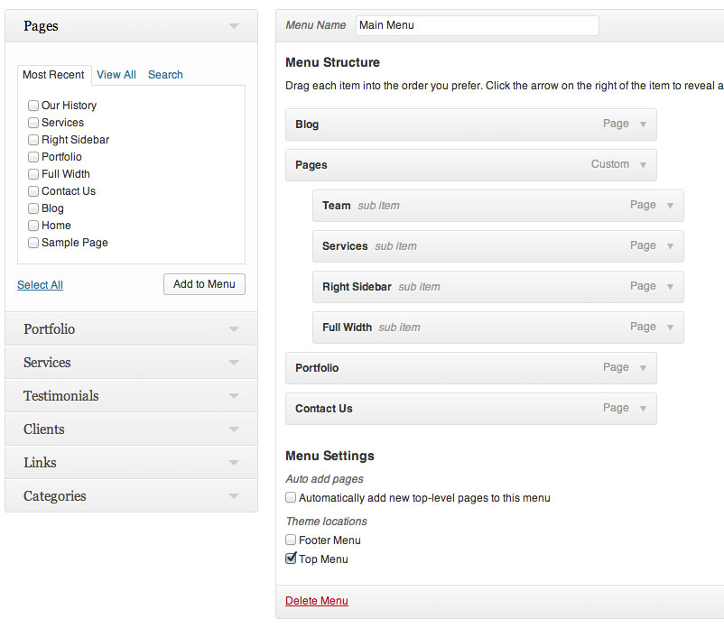
3. Theme Configuration
This theme includes an Administration panel that will allow you to change various aspects of the theme such as the logo, homepage layout, portfolio options...etc.
3.1 Theme Options Panel
To access the theme options panel simply...
- Log into your WordPress dashboard
- Go to Apperance -> Theme Options
3.2 Custom Logo
By default this theme will show your site title in the logo area if no custom logo image has been uploaded. If you wish to add your own image logo simply do the following...
- Log into WordPress
- Go to Apperance -> Theme Options
- Click on the Header Tab
- Under "Main Logo Upload" click the "upload" button
- Upload or choose your file
- Once you have an image you want to use, first select your "Image Size" then click the button that says "use this image".
4. Custom Post Types
This theme comes with some custom post types that allow you to create custom sections on your wesbite.
4.1 Using Custom Post Types
In the image below you can see where your custom post types are located. The HP Highlights and Clients are for the homepage only while the rest are for other sections of your site (Portfolio/Services). The Testimonial section can be displayed on the homepage and portfolio page.
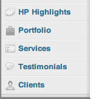
Once you add your portfolio and service items, to see them on your site you must add a new page and select the appropriate template - as explained in the sections below
- Log into WordPress
- Go to Apperance -> Theme Options
- Click on the Header Tab
- Under "Main Logo Upload" click the "upload" button
- Upload or choose your file
- Once you have an image you want to use, first select your "Image Size" then click the button that says "use this image".
4.2 Creating a Portfolio Page
To create your portfolio page follow the steps below
- Log into WordPress
- Create a new page
- Under "Page attributes" select the "Portfolio" template
- Click Publish
- Your portfolio items will appear automatically
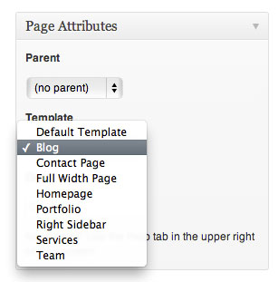
4.3 Adding Portfolio Items
To add portfoio items to the portfolio page, follow the steps below
- Log into WordPress
- Click on the "Portfolio" tab
- Select Add New
- Add your Content
- Select Your Featured Image
- Publish
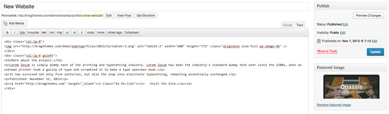
Portfolio Options
The portfolio items have various options for editing your post and adding content.
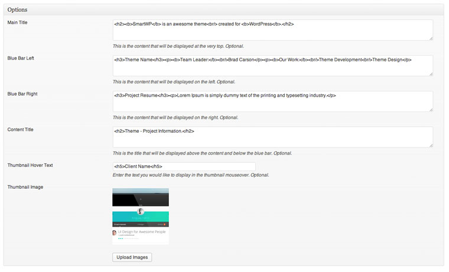
4.4 Creating a Services Page
To create your services page follow the steps below
- Log into WordPress
- Create a new page
- Under "Page attributes" select the "Services" template
- Upload a Featured image to be used as the background image above the footer. The image size should be pretty big. The size used in the demo is 1400x642
- Click Publish
- Your services items will appear automatically
Use the Options section to set various optional content on this page. See the screenshot below to setup your site like the demo. Click the +/- button to add/delete content textareas.
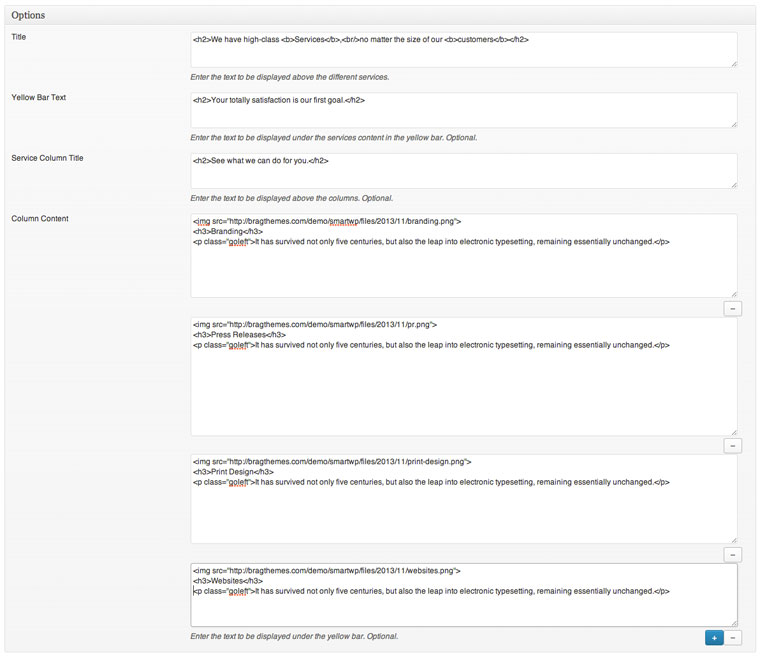
4.5 Adding Service Items
To add service items to the services page, follow the steps below
- Log into WordPress
- Click on the "Services" tab
- Select Add New
- Add your content
- Publish
Use the Options section to set the optional subtitle.
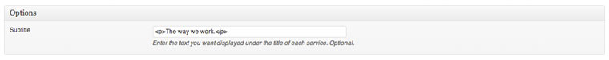
4.6 Adding Clients Items
To add client items for the homepage, follow the steps below
- Log into WordPress
- Click on the "Clients" tab
- Select Add New
- Enter the title. (This will be displayed in the tooltip)
- Upload the logo using the featured image section.
- Publish
Note: Add/Edit the content above the client logos in Appearance -> Theme Options -> Homepage -> Clients textarea
4.7 Adding Testimonials
You have the option to display the testimonials on the homepage and portfolio page. To display on the homepage be sure the Testimonial module is in the Enabled column in the Appearance -> Theme Options -> Homepage section. If you would like to display the testimonials on the portfolio page go to Appearance -> Theme Options -> Portfolio and make sure you have them enabled.
- Log into WordPress
- Click on the "Testimonial" tab
- Select Add New
- Add your Content
- Publish
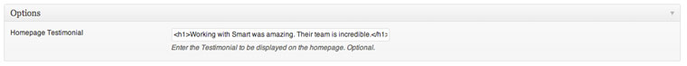
4.8 Adding HP Highlights
To add HP Highlight items for the homepage, follow the steps below
- Log into WordPress
- Click on the "HP Highlights" tab
- Select Add New
- Add your Content
- Publish
Use the Options section to set the icon that is displayed above the title and content. Use any of the latest Font Awesome 4 icons.
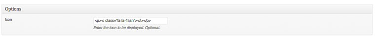
5. Blog
Create a Blog page to automactically display your blog posts.
5.1 Creating a Blog Page
To create your blog page follow the steps below
- Log into WordPress
- Create a new page
- Under "Page attributes" select the "Blog" template
- Click Publish
- Your services items will appear automatically
6. Homepage
Setting up the homepage is as easy and drag and drop.
6.1 Creating the Homepage
To create your homepage by following the steps below
- Log into WordPress
- Create a new page
- Under "Page attributes" select the "Homepage" template
- Enter content that will be displayed if the Page Content module is enabled. (Explained below)
- Click Publish
By default this theme will automatically show your recent blog posts on the homepage. To set your newly created homepage to the default homepage follow the steps below.
- Browse to Settings->Reading
- Select the new homepage as the static page for the front page display as shown below
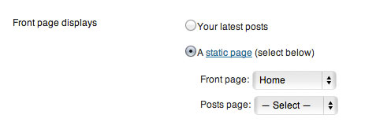
6.2 Setting up the Homepage
The homepage is fully customizable via the theme panel. If you go to Apperance --> Theme Options and click on the Homepage tab you can see all the homepage options. Easily move the modules around to enable/disable them as well as customize via the available fields/options.
Note: Click on a Module to drag/drop it to the enabled/disabled column.
Image - This is the large image and text that can be edited and uploaded from the Image & Text section in the Homepage theme options tab.
HP Highlights - Shows your HP Highlight custom post type in 3 columns.
Tagline- The tagline is controlled via the input field below the drag/drop layout manager.
Page Content- This will display the content and featured image from the page you have set as Homepage.
Clients - Shows your Clients custom post type items.
Portfolio - Shows your latest portfolio items.
Testimonials - Shows your Testimonials custom post type items.
Social - Shows your the social media icons you have set from Appearance -> Theme Options -> Social.
7. Contact Page
Setting up the contact page and map
7.1 Creating the Contact Page
- Log into WordPress
- Create a new page
- Under "Page attributes" select the "Contact" template
- Click Publish
7.2 Contact Page Map
- Log into WordPress
- Go to Pages
- Edit the page you are using the Contact page template on
- Copy and paste the Google Map iframe code you would like to display in the Options section.
Edit the width of the map in the iframe code to 100%. The contact form will automatically send the form submissions to the email address listed as the admin email address in the Users section.

8. Team Page
Setting up the team page
8.1 Creating the Team Page
- Log into WordPress
- Create a new page
- Under "Page attributes" select the "Team" template
- Add Content
- Upload a Featured image to be used as the background image above the footer. The image size should be pretty big. The size used in the demo is 1400x642
- Click Publish
Use the Options section to add content to the theme page.
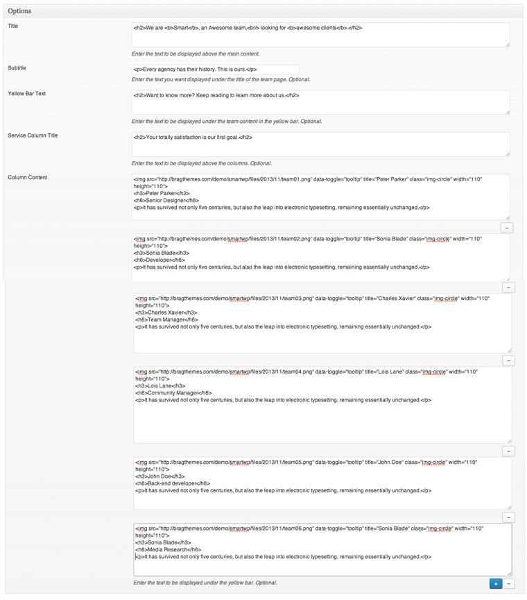
9. The Footer
The footer area includes 3 widget areas. Left, Middle and Right footer.
9.1 Footer Widgets
- Log into WordPress
- Go to Apperance --> Widgets
- Drag the widgets you want into your widgetized footer regions
10. Files & Sources
To sum it all up, this is dedicated to the theme templates, image files and other sources / credentials for our theme.
10.1 PSD Sources
This theme does not include a PSD file.
10.2 Image Credits
- Steve Snodgrass - Link
- All other images provided by Unsplash.com - Link